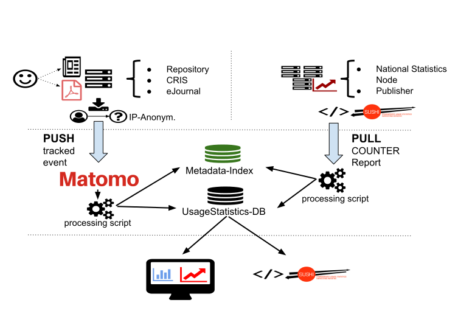

Introduction
Purpose
The guidelines are aimed to provide orientation for data source managers about participation in the OpenAIRE Usage Statistics Service and about the methods and standards used to collect and process usage data in order to generate comparable, standards-based usage statistics. The guidelines follow the Release 4 of the COUNTER Code of Practice for e-Resources supplemented by the IRUS-UK Code of Practice.
Introduction
The OpenAIRE Usage Statistics Service gathers usage data and consolidated usage statistics reports respectively, from its distributed network of data providers (repositories, e-journals, CRIS) by utilizing open standards and protocols and exploiting reliable, consolidated and comparable usage metrics like counts of item downloads and metadata views conformant to COUNTER Code of Practice.
The Usage Statistics Service, allows the sharing of statistics across the above distributed network and provides significant added value for different stakeholders. On the data-provider level, it can serve repository managers and hosting institutions as a tool to evaluate the success of the publication platform. On the individual item level, it can demonstrate popular publications to authors and readers. In addition to other traditional (e.g. citation counts) and alternative metrics (e.g. mentions, recommendations) it can inform funding authorities in research evaluation processes.
Usage statistics on the item level can reflect relevance of a particular research output, of topics, of (disciplinary) data sources over the course of time and up to the present, e.g. they are an important indicator to analyze trends. For non-traditional output types (e.g. research data, research software), usage statistics are often the only indicator available, while the implementation of data citation standards lags behind.
The OpenAIRE Usage Statistics Service aims to facilitate the above added-value services by tracking, collecting, analyzing and monitoring usage data from its network of data providers and exploiting usage metrics like downloads and metadata views. Moreover, OpenAIRE’s distributed network of data providers allows the aggregation of usage data about publications which are published in several places.
Being aware of the sensitivity of this usage data, legal constraints are considered regarding the EU General Data Protection Regulation (GDPR). The aim is to allow COUNTER-conformant reports on usage statistics to be generated and thus enable the results of this process to be used to examine correlations with other types of metrics, e.g. bibliometric and webometric. This service is integrated with the repository dashboard, the OpenAIRE portal and API for 3rd party reuse.
Usage Statistics Service Specification
Matomo Open Source Analytics platform
OpenAIRE’s usage statistic service uses the Matomo Open Source Analytics platform (matomo.org) to track usage activity. Matomo is a platform for web traffic analysis which started in 2007 and has recently become the world's leading open-source analytics platform. Matomo provides users with valuable insights into their website traffic and visitors activity. The main advantage of Matomo against other analytics platforms, e.g. Google Analytics, is its approach to ownership of collected data. All information gathered, is available and controlled only by Matomo users and by default is not shared with any third parties.
Matomo is self-hosted, so the platform is stored on user’s infrastructure and all data is tracked inside the user’s database. Thus, the user keeps full data ownership and can control who has access. It provides greater flexibility, as it allows the collection and storage of PII (Personally Identifiable Information) and other sensitive data that cannot usually be stored outside of a user’s system. Due to its privacy policy, Matomo is compliant with EU regulations, and is recommended by independent centers for Privacy Protection, e.g. ULD 16 in Germany and CNIL 17 in France. Apart from its privacy policies, Matomo exceeds the main competitive Google Analytics platform in other respects, as shown in Table 1 below.
| Matomo | Google Analytics | |
|---|---|---|
| Service Access | Open Source, self-hosting | Free to use; service provider solution |
| Number of Hits per Month | Unlimited | 10 million |
| Number of User Accounts per login | Unlimited | 10 |
| Data storage time | Unlimited | 25 months |
| Number of properties (websites, apps etc.) tracked per account | Unlimited | 50 |
| Custom Variables | 5 | 5 |
| Data Export | Unlimited | 5000 rows |
| Real time Analytics | Piwik offers real-time web analytics in all of its reports. | GA monitors user activity right after it happens, although period of delay is not explicitly stated. |
Description of the Service
OpenAIRE Usage Statistics Service operates as a basis for:
- reliable, comparable standards-based statistics (COUNTER-conformant, bot filtering)
- reporting to stakeholders (e.g. as a repository dashboard feature)
- accumulated usage statistics of repository items which are hosted in multiple data providers (de-duplication)
- provision of usage statistics as an open metric via a standardized API (SUSHI-Lite) for 3rd party re-use.
Two approaches are foreseen for the collection of usage data, named Tier 1 and Tier 2, both depicted in Figure 1. Tier 1, is the default workflow offered by the Usage Analytics service in OpenAIRE. Tier 1 exploits a Push workflow provided by Matomo platform and allows server side tracking of events. Open Access repositories embedd tracking code in the form of DSpace plugins or EPrints patches, that exploit Matomo's HTTP API. Usage Activity is tracked and logged at Matomo platform in real time. Ιnformation is transferred offline, using Matomo’s API, to OpenAIRE’s DBs for further processing using the COUNTER Code of Practice and statistical analysis. Statistics are subsequently deployed via OpenAIRE’s Portal, OpenAIRE's Repository Dashboard or Sushi-Lite API endpoint. Tier 1 approach tracks the following information by means of tracking parameters:
| Parameter | Description |
|---|---|
| idSite | the ID of the repository |
| idVisit | a visitor/session ID (an 8 byte binary string) |
| visitIP (optionally anonymized) | the IP address of the visitor action |
| action | the action performed (view or download) |
| url | the url of the requested item |
| timestamp | the date & time of the request |
| OAI-PMH Identifier | the Open Access Initiative identifier of the item being viewed/downloaded |
| agent | the Web Browser and the operating system of the visitor |
| referrer | The url linked to the item requested |
A different approach for the usage analytics service, named Tier 2 and also depicted in Figure 1, follows a Pull approach, whereas data providers or usage statistics aggregation services (e.g. IRUS-UK) offer a bulk download method for the usage data. In particular, Tier 2 approach supports the gathering of consolidated statistics reports using other protocols such as SUSHI-Lite. These statistics are also stored to OpenAIRE’s DB for statistical analysis and are deployed via OpenAIRE’s Portal, OpenAIRE's Repository Dashboard, or Sushi-Lite API.
As seen above, Usage Statistics service interacts with other parts of the OpenAIRE infrastructure, namely the repository dashboard, the data source profile management and the OpenAIRE portal. Integration of repository usage statistics comprises the following steps:
- registration of the repository in the Piwik platform via the repository dashboard
- installation of the tracking code
- tracking of usage events from the repository in Matomo
- application of COUNTER rules on usage data and storing them to the OpenAIRE statistics DB
- presentation of usage statistics on the OpenAIRE Portal and dashboard and provision via the SUSHI-Lite API endpoint.

Fig.1 2-Tiers Collection Workflows for Usage Statistics
Usage Statistics Service Registration
The first step of the usage tracking process is the registration of the repository to the Matomo platform. This is done by the data provider manager via the repository dashboard. A unique identifier of the Matomo instance is generated and associated with the repository, together with an authentication token, required to access the platform. The identifier is stored and accessible in the data source profile.
Usage Statistics Service Configuration
There are four steps that need to be performed in order to configure and use the Usage Statistics Service. These steps require the co-operation of the repository and given below:
On the Repository's side
- Download the tracking code for the repository platform.
-
Configure the tracking code according to the instructions. The code and the instructions are maintained on Github:
-
Deploy the tracking code in your repository platform.
On the OpenAIRE's side
- OpenAIRE's usage statistics staff will validate the installation of the tracking code and inform the repository manager accordingly.
Application of COUNTER Code of Practice rules on usage events
An important step of the Usage Statistics Service process is the cleaning of usage activity which is caused by machines like web bots or spiders. Such software systematically browses websites in order to enhance web indexing but their activities affect usage traffic statistics since they result in the logging of non-legitimate usage activity. To avoid such non-legitimate traffic Matomo maintains a community-contributed list of referrer spammers. The list is stored in a file named spammers.txt and contains one (bot/spider) host per line. This list is included in each Matomo release so that referrer spam is filtered automatically. Matomo also automatically updates this list to its latest version every week.
The main cleaning process in usage logs, is the application of the COUNTER Code of Practice rules, as described in the last version of the COUNTER framework. COUNTER framework provides an international, extendible Code of Practice for e-Resources that allows the usage of online information products and services to be measured in a credible, consistent and compatible way using vendor-generated data.
COUNTER specifies the following return codes and time filters for data processing :
- Only successful and valid requests should be counted. For web server logs successful requests are those with specific NCSA return codes. (200 and 304). The standards for return codes are defined and maintained by NCSA. In case key events are used their definition should match the NCSA standards. (For more information see Appendix D: Guidelines for Implementation.)
- Records generated by the server together with the requested page (e.g. images, gif’s, style sheets (.css)) should be ignored.
- All users’ double-clicks on an http-link should be counted as only 1 request. The time window for occurrence of a double-click should be set at 10 seconds between the first and the second mouse-click.
There are a number of options to make sure that a double click comes from one and the same user:
- where only the IP address of a user is logged that IP should be taken as the field to trace double-clicks
- when a session-cookie is implemented and logged, the session-cookie should be used to trace the double-clicks.
- when user-cookies are available and logged, the user-cookie should be used to trace double- clicks
- when the username of a registered user is logged, this username should be used to trace double-clicks.
Options 1 to 4 above have an increasing level of reliability for filtering out double-clicks: option 1 has the lowest level of precision (and may lead to under reporting from the vendor perspective) while with option 4 the result will be optimal. The downloading and rendering of a PDF, image, video clip or audio clip may take longer than the rendering of an HTML page. Therefore, requests by one and the same IP/username/session- or user cookie for one and the same PDF, image, video clip or audio clip should be counted as a single request if these multiple requests occur within a 30 seconds time window. These multiple requests may also be triggered by pressing a refresh or back button on the desktop by the user.
In OpenAIRE’s case the 10s and 30s time window for views and downloads are implemented respectively. Sessions are automatically identified by Matomo. Regarding repository records with multiple files associated (e.g. multiple book chapters), download requests are counted multiple times if the identifier (e.g. Handle, DOI) is the same.
Representation and Provision of Usage Statistics
After COUNTER rules are applied, the resulting usage statistics are represented in the OpenAIRE's dashboard for repository mangers, in the OpenAIRE portal per data source and document using a variety of charts. The statistics can also be requested as COUNTER Reports from the SUSHU-Lite endpoint. The relevant report types generated by OpenAIRE are for example:
- IR-1 - Item Report 1, number of successful item download requests by month and repository
- JR-1 - Journal Report 1, number of successful full-text article requests by month and journal
- RR-1 - Repository Report 1, number of successful item downloads for all repositories participating in the usage statistics service